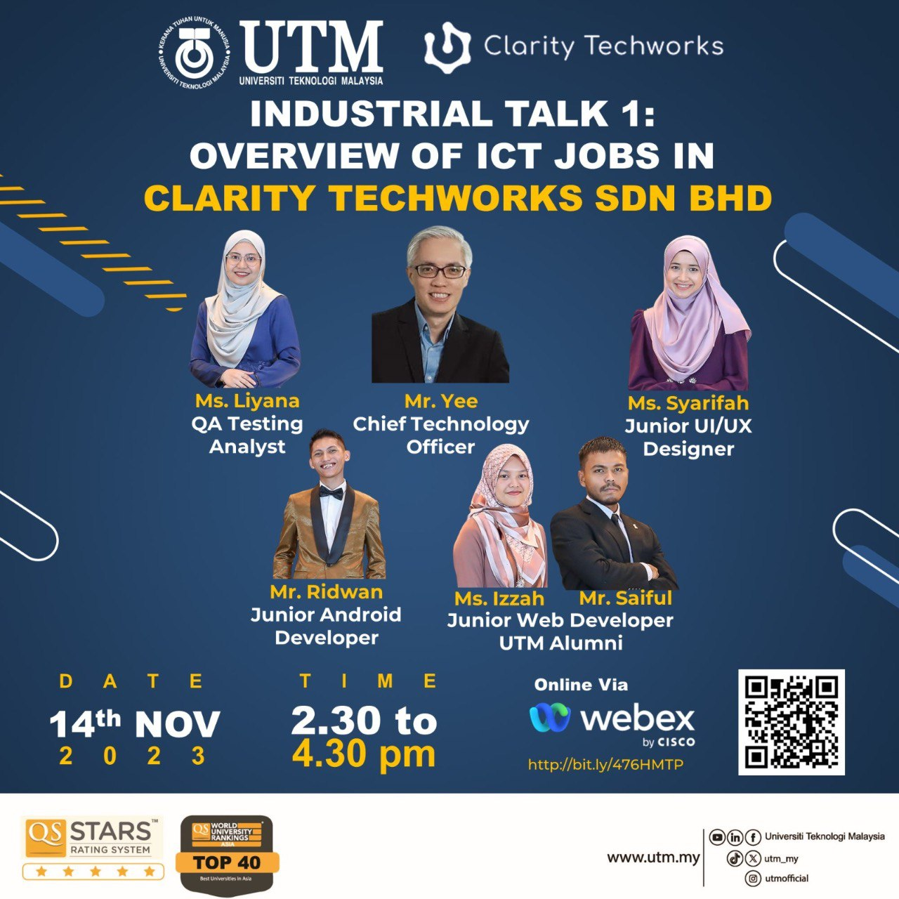

November 23, 2023
Reflection : Design thinking provides a solution-based approach to solving problems. I learned how to create a product that meets the needs of users. It is not just my idea to innovate something, but have to relate to users' demands and solve the problems. By testing the prototype, I understood the importance of refinement to ensure our solutions were user-friendly and effective. Design thinking encourages me to think creatively and develop solutions to problems which are somehow similar to the software development life cycle.

Reflection : I have an understanding of 5 distinct ICT careers which are Web Developer, UI/UX Designer, Android Developer, and QA Testing Analyst after the talk. Those speakers shared about the difference between work-life and study which made me realize the importance of adaptability in the workplace. The talk also outlined essential skills in each career, emphasizing not only technical skills but also soft skills such as communication skills and problem-solving skills.

Reflection : Before visiting UTM Digital, we had a virtual talk to preview the key areas and roles. We visited 5 places which are the open office, data center, digital care unit, and TM room. UTM Digital serves as our university driver to upgrade ICT services to the latest technology and ensure the ICT infrastructure is always available to support the system. Overall, I appreciate every staff for keeping our university running. Their dedication and hard work inspired me. I admire their profession and look forward to learning from them.
Reflection : From this industrial talk, the speaker shared how she got into this field and became a member of Credence. It got me thinking of my journey to be a future system developer in the next 4 years throughout university life. It is essential to learn a variety of programming languages such as Python and Java as it is the fundamental skills for a system developer. Besides, I should improve my soft skills such as analysis, problem-solving, and critical thinking as those are indispensable skills for a system developer to meet clients' demands. I plan to join projects and workshops available at the university to enhance my soft skills. During my leisure time, I will do some self-study to have a better understanding of basic computer science principles, including data structures, algorithms, and programming languages.

Donec eget ex magna. Interdum et malesuada fames ac ante ipsum primis in faucibus. Pellentesque venenatis dolor imperdiet dolor mattis sagittis magna etiam.
Reflection : PC assembly lab is the first lab I underwent in UTM.
First of all, it allowed me to learn the hardware components of a PC by physically interacting.
I could identify the components and functions such as the power supply, RAM, and ROM after
the lab. Besides, it enhanced my problem-solving skills and I gained experience in facing challenges
as we had to assemble the PC on our own after the dissemble guided by a lab assistant. We had to
troubleshoot if the PC did not work. Lastly, as we were allocated in groups, I got the
opportunity to work with classmates. I realized that effective communication is crucial in teamwork.
.png){kind=link}